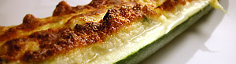

Zuccini-Schiffchen
4,5 von 64 kleine zucchini längs halbieren und aushölen und das "fleisch" hacken. in einer bratpfanne eine zwiebel, einige frische
salbei blätter und das fruchtfleisch dämpfen. 150 g rahmquark, 100 g greyerzer, 1 eigelb, salz und pfeffer dazu geben.
1 eiweiss steifschlagen und darunter ziehen. 1 dl gemüsebouillon dazwischen giessen und bei 200 grad ca. 25 min gratinieren.
